Ogni contributo verifica fonti primarie e indica cosa cambia per il destinatario. Mai marketing, mai pareri travestiti.
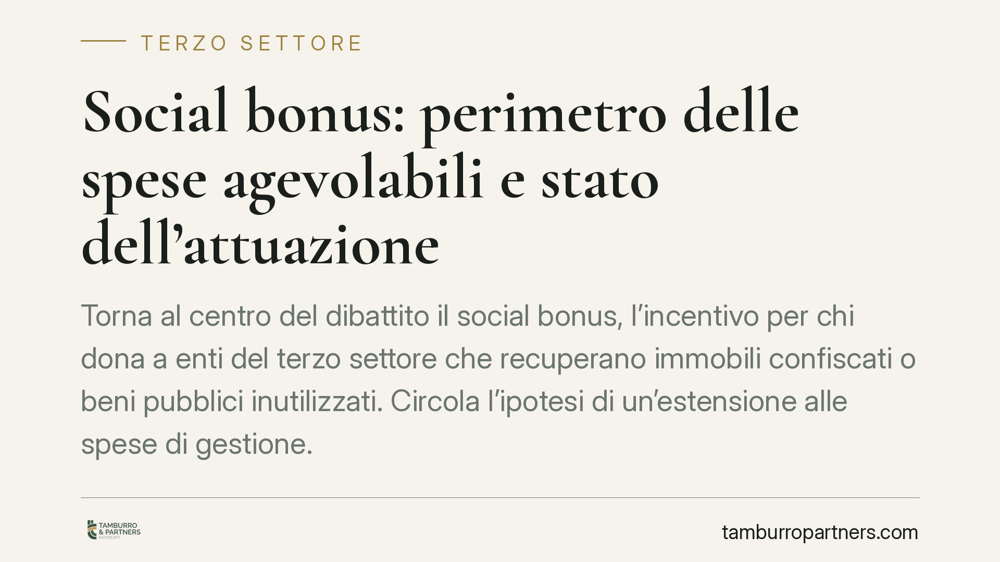
Torna al centro del dibattito il social bonus, l'incentivo per chi dona a enti del terzo settore che recuperano immobili confiscati o beni pubblici inutilizzati. Circola l'ipotesi …
L'INPS torna sul tema della NASpI per i detenuti che svolgono attività lavorativa all'interno degli istituti penitenziari. Il chiarimento riguarda i presupposti per l'accesso all'i…
Chi compra un bene e non si accorge di un difetto evidente rischia di perdere la garanzia del venditore. Il codice civile distingue infatti tra vizi occulti e vizi facilmente ricon…
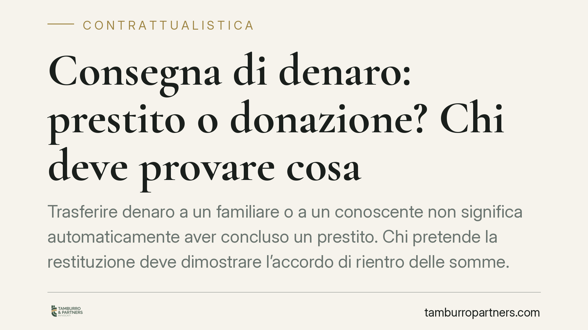
Trasferire denaro a un familiare o a un conoscente non significa automaticamente aver concluso un prestito. Chi pretende la restituzione deve dimostrare l'accordo di rientro delle …
L'INPS ferma per l'estate 2026 l'invio di gran parte degli atti a datori di lavoro e contribuenti. Dal 27 luglio al 31 agosto restano sospese note di rettifica, diffide e avvisi di…
Il datore di lavoro può legittimamente sospendere lo stipendio quando il dipendente non esegue la prestazione dovuta. Il fondamento è il carattere sinallagmatico del contratto e l'…
Chi compra online ha 14 giorni per ripensarci e restituire il prodotto senza motivazione. È il diritto di recesso previsto dal Codice del consumo. Ma il termine cambia se il vendit…
Lo status di vittima del dovere non si prescrive: può essere accertato in qualsiasi momento. I benefici economici che ne derivano, invece, seguono i termini di prescrizione dei cre…
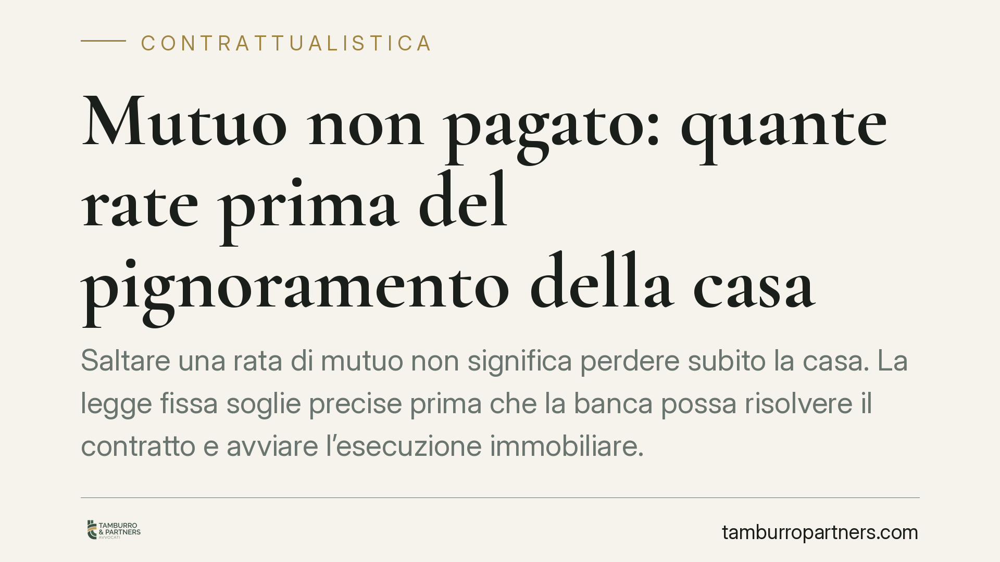
Saltare una rata di mutuo non significa perdere subito la casa. La legge fissa soglie precise prima che la banca possa risolvere il contratto e avviare l'esecuzione immobiliare. Co…
Chiudere una loggia con vetrate o tamponature sembra un intervento minore, ma per la giurisprudenza amministrativa crea nuova volumetria e nuova superficie utile. Senza il titolo e…
I contributi previdenziali non si calcolano sulla retribuzione effettivamente pattuita, ma su un parametro autonomo: il minimale contributivo ancorato ai minimi dei contratti colle…
Quando il condominio non paga un fornitore, chi risponde del debito? Le Sezioni Unite hanno chiarito che vale la parziarietà: ogni proprietario risponde solo in proporzione alla pr…
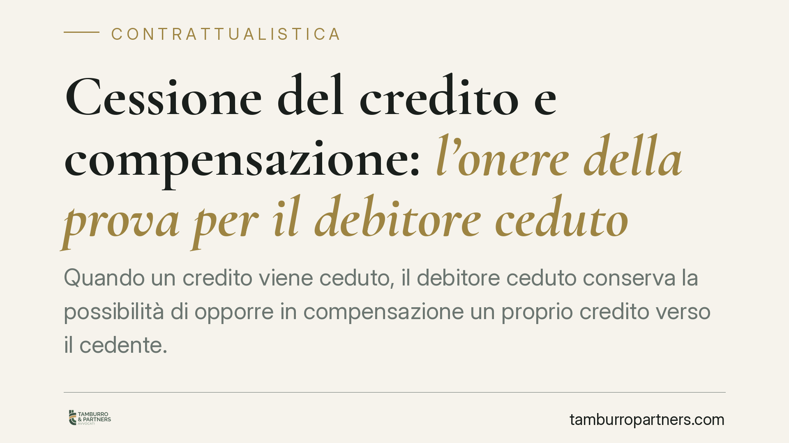
Quando un credito viene ceduto, il debitore ceduto conserva la possibilità di opporre in compensazione un proprio credito verso il cedente. Ma entro quali limiti temporali e con qu…
Banca Etica e diverse reti del Terzo settore hanno rilanciato la richiesta di strumenti di garanzia pubblica più adatti all'economia sociale, comparata per peso economico al settor…
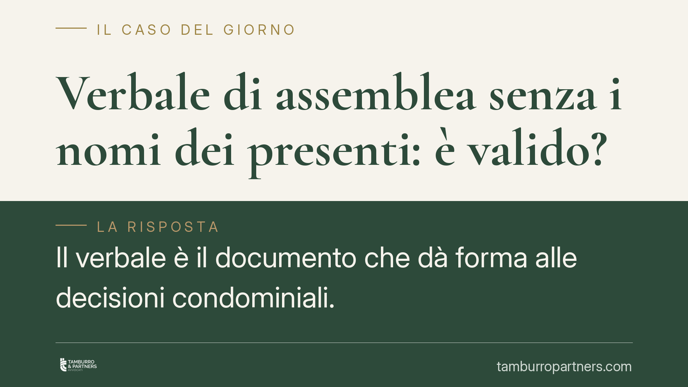
Il verbale è il documento che dà forma alle decisioni condominiali. Se non riporta i nominativi dei presenti e le rispettive quote millesimali, la verifica dei quorum diventa impos…
Molti contratti prevedono una penale in caso di recesso prima della scadenza. Quando l'importo appare sproporzionato, la legge consente al giudice di ridurlo. È l'art. 1384 del cod…
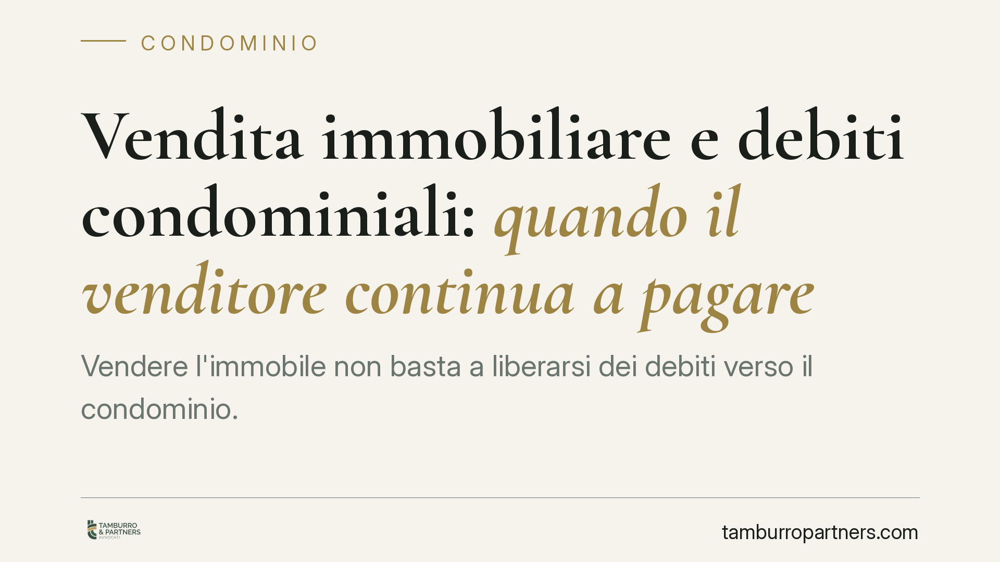
Vendere l'immobile non basta a liberarsi dei debiti verso il condominio. Una recente pronuncia del Tribunale di Treviso ricorda che, senza la trasmissione formale dell'atto di tras…
Molti condòmini si chiedono se l'amministratore possa entrare nell'appartamento per verifiche tecniche. La risposta, salvo urgenze documentate, è negativa: la proprietà esclusiva è…
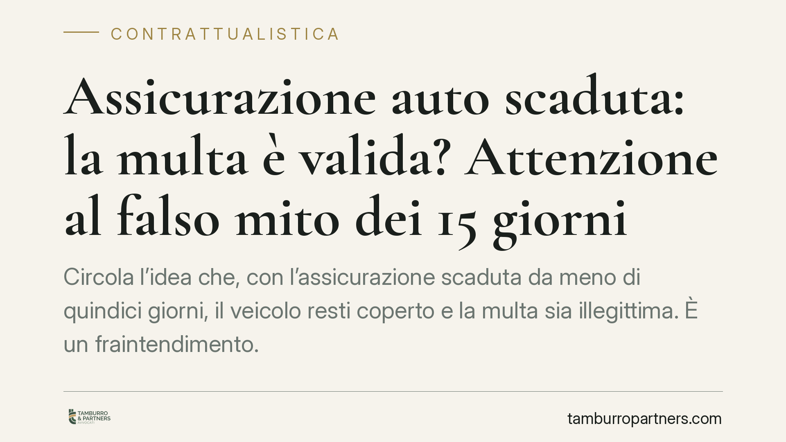
Circola l'idea che, con l'assicurazione scaduta da meno di quindici giorni, il veicolo resti coperto e la multa sia illegittima. È un fraintendimento. Per l'obbligo RCA il periodo …
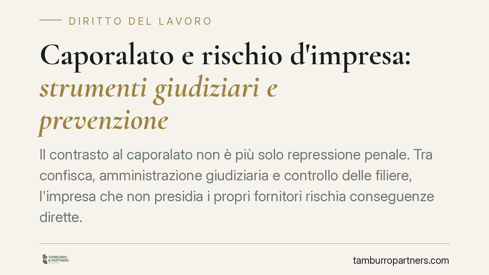
Il contrasto al caporalato non riguarda più solo chi recluta o sfrutta direttamente. Attraverso sequestri penali e misure di prevenzione, il rischio investe anche imprese formalmen…
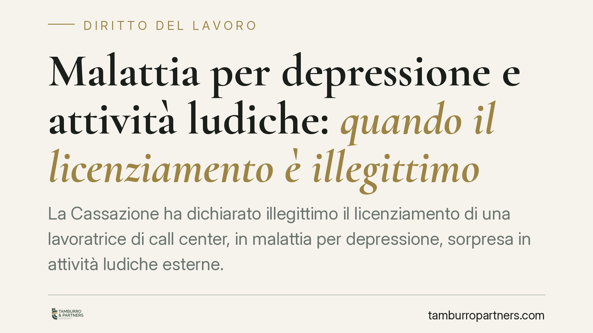
La Cassazione ha dichiarato illegittimo il licenziamento di una lavoratrice di call center, in malattia per depressione, sorpresa in attività ludiche esterne. Il datore non aveva p…
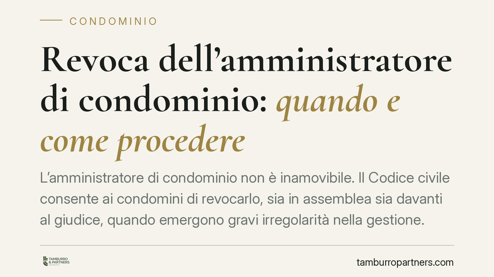
L'amministratore di condominio non è inamovibile. Il Codice civile consente ai condomini di revocarlo, sia in assemblea sia davanti al giudice, quando emergono gravi irregolarità n…
Il Collegato Lavoro ha cambiato le regole per chi abbandona il posto senza avvisare. L'assenza ingiustificata protratta oltre una certa soglia viene ora equiparata a dimissioni vol…
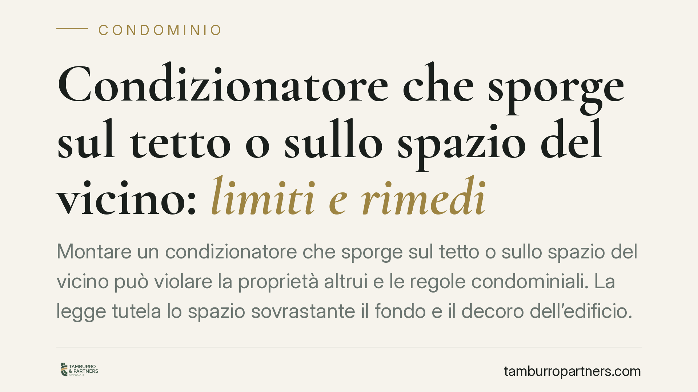
Montare un condizionatore che sporge sul tetto o sullo spazio del vicino può violare la proprietà altrui e le regole condominiali. La legge tutela lo spazio sovrastante il fondo e …
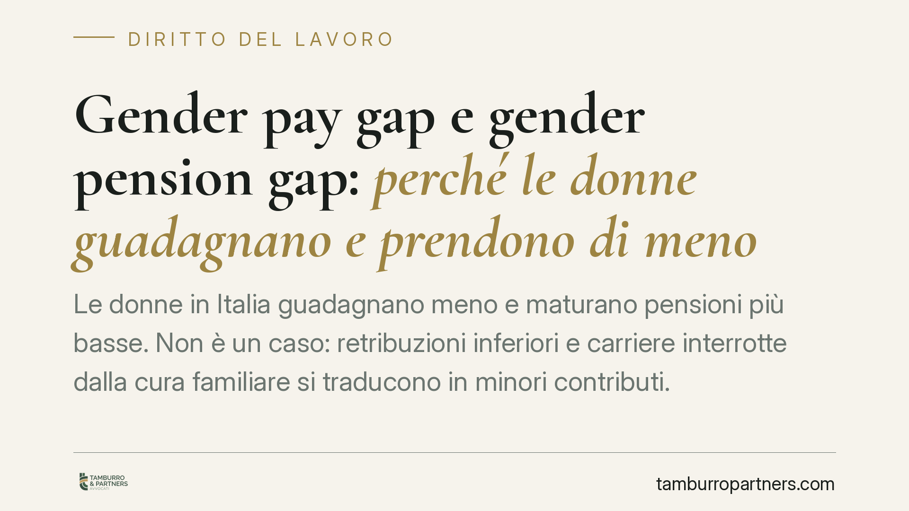
Le donne in Italia guadagnano meno e maturano pensioni più basse. Non è un caso: retribuzioni inferiori e carriere interrotte dalla cura familiare si traducono in minori contributi…
La vendita di un veicolo di provenienza furtiva non produce nullità del contratto, ma apre il campo ai rimedi contro l'inadempimento. La distinzione tra vendita di cosa altrui e co…
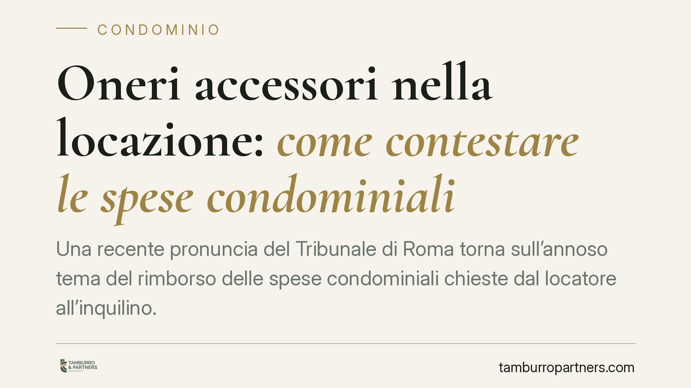
Una recente pronuncia del Tribunale di Roma torna sull'annoso tema del rimborso delle spese condominiali chieste dal locatore all'inquilino. Il principio è netto: senza documentazi…
Chi riceve in eredità un appartamento tramite legato può trovarsi a fronteggiare i contributi condominiali non pagati dal defunto. La questione tocca il rapporto tra legatario, ere…
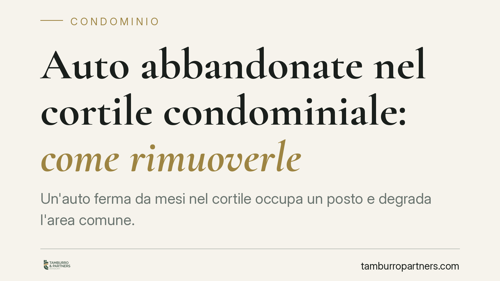
Un'auto ferma da mesi nel cortile occupa un posto e degrada l'area comune. Ma non tutti i veicoli inutilizzati sono uguali: cambia molto se il proprietario è un condomino, un estra…
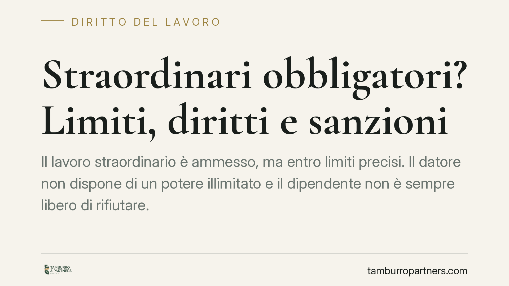
Il lavoro straordinario è ammesso, ma entro limiti precisi. Il datore non dispone di un potere illimitato e il dipendente non è sempre libero di rifiutare. Capire quando lo straord…